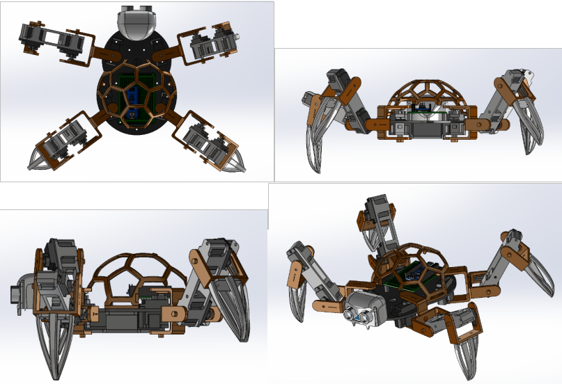
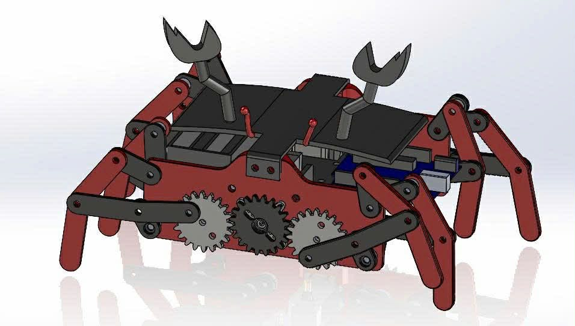
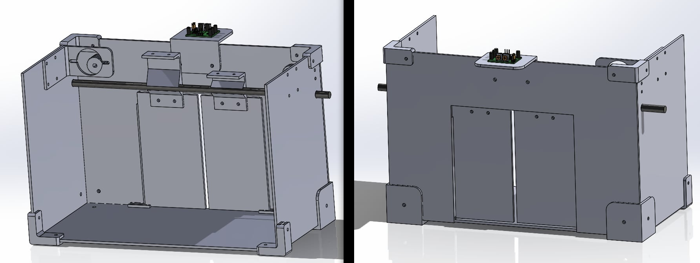

Phuc Dinh Van
I am an undergraduate student at VNU University of Engineering and Technology (VNU-UET) and a Research Assistant at both VNU-UET and VinUniversity. My research focuses on Human–Robot Interaction, Robotics, and Artificial Intelligence, with the goal of developing intuitive and effective communication methods between humans and robotic systems. In addition to research in AI and robotics, I also work with CAD and CAE tools for mechanical design, modeling, and simulation to support robotic system development.
Email / Google Scholar / Github / LinkedIn / CV
Recent News
- [Sep 2023] Started studying at VNU University of Engineering and Technology (VNU-UET).
- [Dec 2024] Started working as a Research Assistant at VNU-UET.
- [Jan 2025] Continue working as a Research Assistant at VinUniversity.
Publications
- Thang Tran Viet, Thanh Nguyen Canh, Huy Uong Gia, Phuc Dinh Van, Son Tran Duc, Minh Ngoc Do, and Hoang Van Xiem, "Development of a Humanoid Robot Prototype for Multimodal Human-Robot Interaction", RIVF International Conference on Computing and Communication Technologies (RIVF 2025), Ho Chi Minh City, Vietnam, Dec.2025.
Projects
Quad-Spider Robot Development and Design

Designed and developed a quadruped spider-like robot. The project focuses on mechanical structure design using CAD tools and the development of locomotion mechanisms for stable walking across different terrains.
Crab Robot Design

Designed a bio-inspired crab robot capable of sideways locomotion. The project involved mechanical design, motion mechanism development, and CAE simulation to analyze the robot structure and movement efficiency.
Automatic Door System using PIR Sensor

Developed an automatic door system using a Passive Infrared (PIR) sensor to detect human motion. The system integrates sensor detection, microcontroller control, and actuator mechanisms to automatically open and close the door.